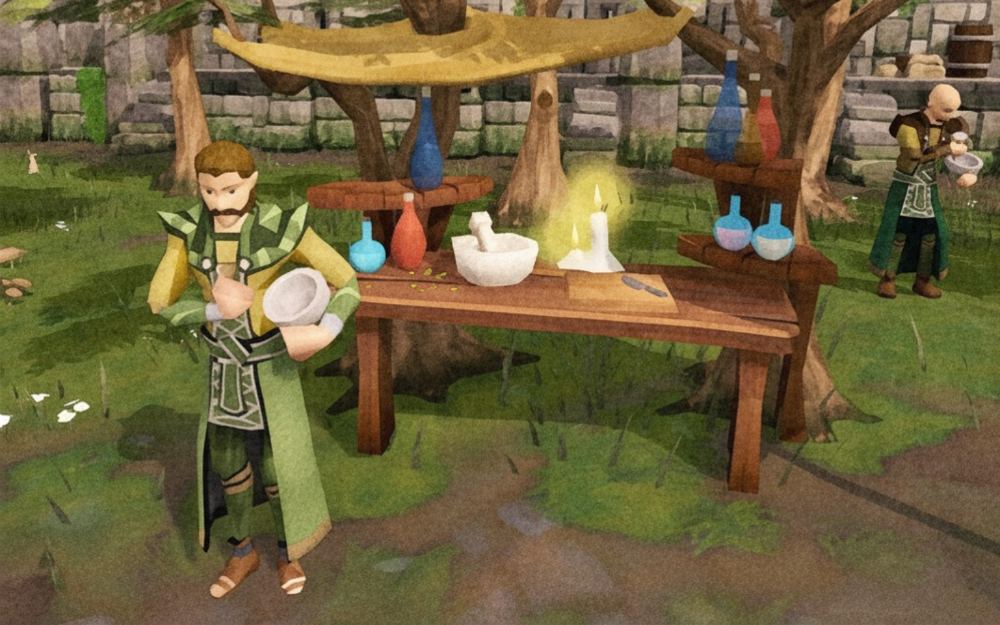

Uma botica criada para problemas modernos.
A Elixírius une herbologia aplicada, manipulação artesanal e controle de qualidade para desenvolver Soluções Alquímicas voltadas à rotina acadêmica, profissional e operacional.
Quando a lógica não resolve, a fórmula precisa ser melhor documentada.
O que fazemos
Herbologia aplicada
Seleção de ingredientes com propósito técnico e estabilidade de uso.
Manipulação artesanal
Fórmulas preparadas em pequenos lotes e acompanhadas por processo.
Controle de qualidade
Avaliação de estabilidade, registro e efeitos observados.
Da bancada ao catálogo.
A Elixírius surgiu como uma pequena botica dedicada ao estudo de fórmulas artesanais para foco, clareza, desempenho e tomada de decisão. Com o tempo, o laboratório passou a organizar suas misturas em processos, lotes e fichas técnicas.
Hoje, nossas Soluções Alquímicas são desenvolvidas para estudantes, profissionais e equipes que enfrentam desafios reais com uma combinação de método, cuidado e uma dose saudável de cautela.
Pesquisa
Identificação da demanda e estudo da fórmula.
Manipulação
Preparo em pequenos lotes e registro do processo.
Qualidade
Avaliação de estabilidade, resposta e rastreabilidade.
Liberação
A fórmula segue para o catálogo quando para de surpreender a equipe.

Registro interno de uma etapa de preparo em bancada.
Estrutura técnica e produção controlada.
O laboratório da Elixírius opera com foco em organização, rastreabilidade e padronização das etapas de preparo. Cada solução é manipulada com atenção aos insumos, ao tempo de infusão e às condições gerais de estabilidade da fórmula.
Nossa rotina de produção segue critérios internos de acompanhamento e revisão contínua, com compromisso permanente com a consistência dos lotes.
Avaliação e validação de fórmulas.
Antes de seguir para o catálogo, cada Solução Alquímica passa por etapas de observação, registro e validação interna. Esse processo considera estabilidade, comportamento da fórmula, clareza de indicação e efeitos observados em ambiente monitorado.
Em situações específicas, a equipe técnica realiza testes supervisionados para análise preliminar de resposta, tolerabilidade e coerência dos efeitos esperados.
Registro
Observação
Liberação
Procedimento interno de avaliação sensorial em fase controlada de testes.
Missão, visão e valores
A Elixírius combina estética de botica, processo de laboratório e soluções pensadas para rotinas reais.
Missão
Desenvolver Soluções Alquímicas artesanais com método, cuidado e propósito aplicado.
Visão
Ser referência em fórmulas para desafios contemporâneos que exigem mais do que improviso.
Valores
Rastreabilidade, clareza, responsabilidade técnica e respeito por tudo que já deu errado antes.
Dúvidas sobre a Elixírius
Conheça nossas Soluções Alquímicas
Veja as fórmulas disponíveis, seus ingredientes, indicações e advertências.
Ver Soluções Alquímicas